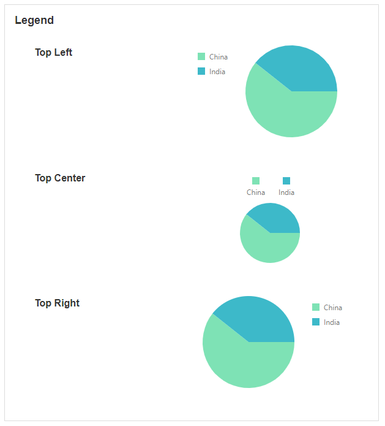
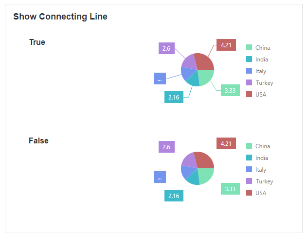

Pie Chart
This Block allows you to display data in the format of a Pie Chart. This is useful if you want to show categorical data represented as a slice on the Pie Chart, and to express a part-to-whole relationship between multiple variables.
Pie Chart Properties
Appearance
The visibility property is common to most Blocks;
See the Common Properties article for more details on common appearance properties.
Options that are specific to Pie Charts include the ability to change the type, palette, and legend.
Type
This determines if the pie graph is in the shape of a pie or donut.

Inner Radius
This is only available if the type of Pie Chart is a donut.

Palette
You can specify a custom color for each section of the Pie Graph.
Legend
This specifies where the legend is located around the Pie Chart.

Labels
This will toggle whether or not labels around each section are visible. If labels are enabled, you also have the option to show a connecting line from the Pie Chart to the label. Labels can also be formatted, and numerical data from the Pie Chart can be displayed as decimals, percentages, seconds, and more.

Data Source
Common Properties
Data Sources can be connected to a Pie Chart. This will allow you to display data on the Pie Chart.
See the Common Properties article for more details on common Data Source properties.
Data
Argument Field
This is the name, ID, or any other unique field of a record from the Data Source.
Value
This is the value you want to display using the Pie Chart.

Last modified: November 27, 2025